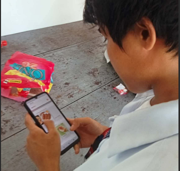

The Testing Scenario
Each of the 40 respondents was asked to complete a set of core tasks while being observed by our team. This helped us identify "pain points" in the user journey.
Task 1: Account Creation & Login
Test how intuitively a student can set up their profile using their PSU credentials.
Task 2: Menu Navigation & Selection
Find a specific local dish (e.g., Bicol Express) and customize the order details.
Task 3: Cart Management
Add multiple items, remove one, and verify the total price before checkout.
Task 4: Checkout & Order Tracking
Complete a simulated payment and track the order status from "Preparing" to "Ready."
Testing Environment
Tests were conducted at the PSU-Goa Main Library and Canteen Area to capture the environmental factors (noise, lighting, and movement) that students face daily.
Tools Used
- High-fidelity Figma Prototype
- Android & iOS Mobile Devices
- Printed SUS Questionnaire
- Observation Checklists

Team observation during testing session.